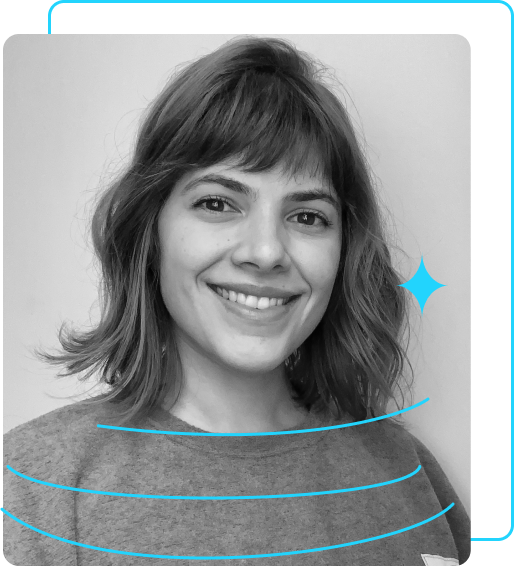

Sobre mim
Minha Jornada no Desenvolvimento
Minha jornada no desenvolvimento começou com a curiosidade de entender como a tecnologia pode transformar ideias em experiências reais. Hoje, atuo como desenvolvedora fullstack, criando soluções completas, do back-end à interface, que unem funcionalidade, design e propósito. =
Gosto de construir aplicações que encantam pelo visual, mas que também impressionam pela estrutura e performance. Encaro cada projeto como uma oportunidade de aprender, evoluir e entregar algo que realmente faça a diferença.
Trabalhar com tecnologia, para mim, é mais do que escrever código — é dar vida a ideias, resolver problemas e criar experiências que conectam pessoas ao digital de forma fluida e inteligente.
Stack e Habilidades
Com foco em desenvolvimento web e mobile, trabalho com tecnologias modernas que equilibram performance, escalabilidade e experiência do usuário:
💻 Front-end & Mobile
- HTML5 Semântico
- CSS3 (Flexbox / Grid / Animações)
- JavaScript (ES6+) & TypeScript
- React.js & Hooks
- Next.js (SSR, SEO e Performance)
- React Native (Desenvolvimento Mobile Multiplataforma)
- Vue.js (Composição e Componentização)
- Design Responsivo e Acessibilidade (WCAG)
- SEO (Otimização para Mecanismos de Busca)
- Figma (Design, Prototipagem e UI/UX)
⚙️ Back-end & Infraestrutura
- C# / ASP.NET Core
- Java / Spring Boot
- APIs RESTful
- MongoDB e Oracle SQL Developer
- Docker (Containerização e Deploy)
- Git & GitHub (Versionamento e Colaboração)
Foco e Valores
Acredito que o código é uma forma de expressão e que um bom desenvolvimento nasce do equilíbrio entre criatividade, técnica e empatia.
Busco sempre escrever código limpo, performático e sustentável, priorizando a experiência do usuário e a qualidade do produto final.
Meu foco é criar soluções que unam estética, usabilidade e tecnologia entregando resultados que sejam tanto funcionais quanto inspiradores.
